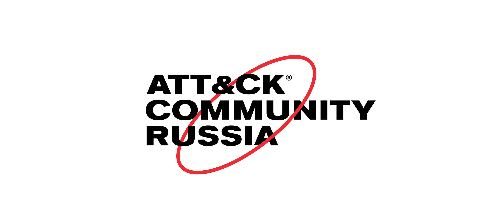

Сообщество русскоязычных специалистов по компьютерной безопасности, использующих MITRE ATT&CK®.Цель
Распространение знаний для борьбы с угрозами компьютерной безопасности.Кодекс поведения
Мы обязуемся сделать участие в сообществе свободным от притеснений для всех, независимо от возраста, телосложения, видимых или невидимых ограничений способности, этнической принадлежности, половых признаков, гендерной идентичности и выражения, уровня опыта, образования, социо-экономического статуса, национальности, внешности, расы, религии, или сексуальной идентичности и ориентации.Мы обещаем действовать и взаимодействовать таким образом, чтобы вносить вклад в открытое, дружелюбное, многообразное, инклюзивное и здоровое сообщество.
Подробнее с нашими обязательствами, стандартами, принципами воздействия можно ознакомиться в Кодексе поведения участника.
Вступить
Подписывайтесь на канал сообщества в telegram чтобы быть в курсе событий.Вступайте в главную группу сообщества в telegram чтобы подключиться к обсуждениям.
Есть вопрос касательно конкретной тактики? Вступайте в соответствующую группу:
- TA0043: Reconnaissance
- TA0042: Resource Development
- TA0001: Initial Access
- TA0002: Execution
- TA0003: Persistence
- TA0004: Privilege Escalation
- TA0005: Defense Evasion
- TA0006: Credential Access
- TA0007: Discovery
- TA0008: Lateral Movement
- TA0009: Collection
- TA0011: Command and Control
- TA0010: Exfiltration
- TA0040: Impact
Происхождение
Координатором русскоязычного сообщества является участник европейского — EU ATT&CK Community. В ходе встреч в Брюсселе и Люксембурге в 2018-2020, возникла потребность в создании подобного сообщества в России.Сообщество не находится под прямым или косвенным управлением корпорации MITRE, и не аффилировано с иными (не)коммерческими организациями. Детальная информация о MITRE ATT&CK® доступна на официальном веб-сайте.